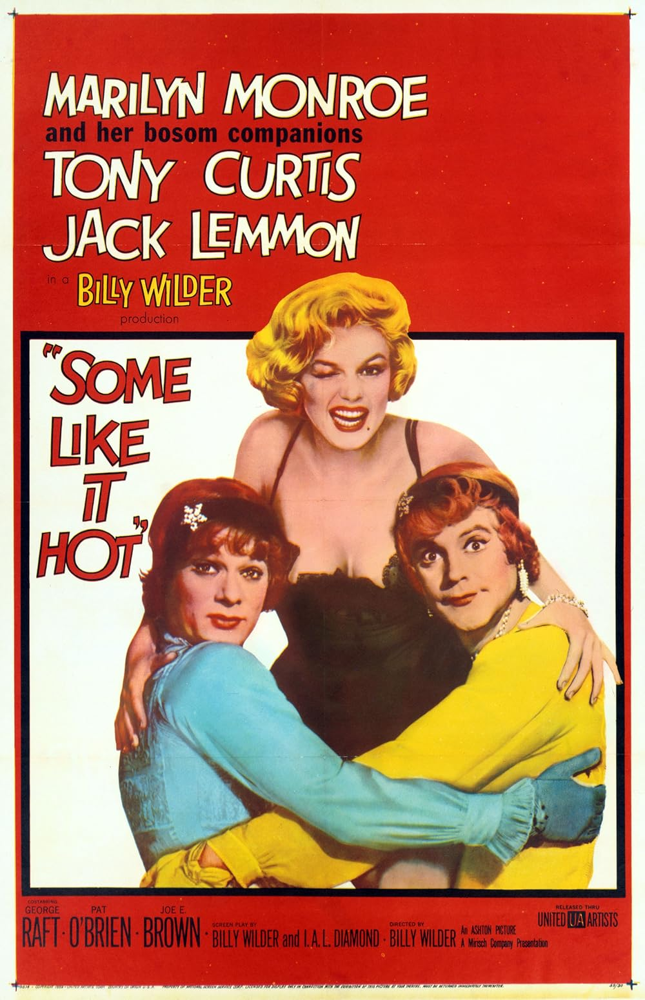

Some Like It Hot
32nd Academy Awards
(Oscars 1960)
6 Nominations, 1 Award
| Nominations | ||
|---|---|---|
| Category | Nominees | Result |
| Actor | Jack Lemmon | Nominated |
| Directing | Billy Wilder | Nominated |
| Writing (Screenplay--based on material from another medium) | Billy Wilder and I. A. L. Diamond | Nominated |
| Cinematography (Black-and-White) | Charles Lang, Jr. | Nominated |
| Art Direction (Black-and-White) | Edward G. Boyle and Ted Haworth | Nominated |
| Costume Design (Black-and-White) | Orry-Kelly | Won |